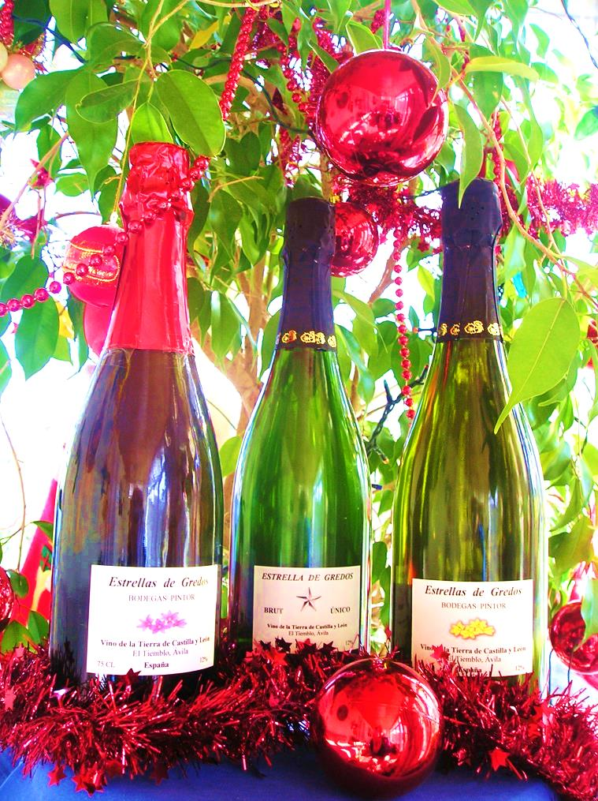

Sobre Nosotros

1Director Técnico Bodegas Pintor
Elaboramos vinos en la zona Oeste de España, Extremadura, Badajoz y Castilla y León, Ávila.
2Profesor de Cata de Vinos
Desde 2008 imparto catas de vinos en grupos básicos y avanzados en la Comunidad de Madrid.
Galeria


Nuestro trabajo

Catas de Vinos

Variedad de Uvas Graciano

Vendimia Albillo Real

Cepa Centenaria

Vino de Hielo y Castañas

Cepas Centenarias de Albillo

Espumantes
Asesoría Vitivínicola y Catas de vino

Muestreo del viñedo
Estimación de la cosecha. Principales parámetros.Parámetros físicos-químicos de la uva.

Clases de Cata de Vino
Tanto de nivel de inilialización como de nivel avanzado .

Elaboración Espumantes
Método Ancestral.